Schlamau wurde 1361 erstmals urkundlich erwähnt und lag zu keiner Zeit wüst, denn Schlamau verfügte über ausreichend Wasser. Die Kirche, ein Feldsteinbau mit Apsis aus dem 13. Jahrhundert, ist ein Baudenkmal. 1701 wurde die Kirche unter Einbeziehung der Apsis in Richtung Osten erweitert. Aus dem Jahr 1469 stammt die Glocke, 1740 wurde eine Sakristei , 1746 eine Gruft angebaut.
Schlamau ist ein unregelmäßiges Angerdorf .
In Schlamau wurden die meisten Wohnhäuser erst nach der Wende zum 20. Jh. auf wesentlich älteren Gehöften errichtet. Die neuen Häuser stehen immer parallel zur Straße in der Straßenflucht, die Vorgänger standen zurückgesetzt oder in der Hofmitte. Als Vierseithöfe mit den vollständigen Nebengebäuden sind noch die Gehöfte Schlamauer Dorfstraße 19 und 35 erhalten. Einziger in seiner ursprünglichen Struktur erhaltener Dreiseithof ist das Gehöft Schlamau Nr.15. Einen wichtigen Blickpunkt im Ortskern stellt das Wohnhaus mit städtischer Klinker-Schmuckfassade und klassizistischen Fassadenelementen Schlamau Nr. 17 dar.
Als neue Häuser entstanden in den 50er Jahren drei Wohngebäude der sogenannten Siedlung, südlich außerhalb des Ortes. In den 70er Jahren kamen an den Ortsrändern Eigenheime dazu. In jüngster Zeit ein Eigenheim in Richtung Schmerwitz, ein Ersatzbau und ein Einfamilienhaus wird noch in diesem Jahr entstehen.
Der Anger in Schlamau ist geprägt durch den Dorfteich, der 2012 saniert wurde. Die Wasserspeisung des Teiches erfolgt über Quellen, die in den südlich von Schlamau gelegenen Rummeln entspringen. Ziel der Teichsanierung war die Verringerung des Sandeintrages, die Ufersicherung und naturnahere Ufergestaltung sowie die Erhöhung der Attraktivität des Teichumfeldes, das schon immer als öffentliche Freifläche genutzt wurde. Der Spielplatz, der versteckt und schlecht zugänglich am nördlichen Rand der Freifläche lag, wurde ans südliche Teichufer gelegt auf eine großzügige sonnige Fläche.
Schlamau ist von Wiesenburg  aus über Neuehütten zu erreichen. Durch Neuehütten führt die B 107, die weiter zur A 2 in Richtung Magdeburg führt. In Neuehütten zweigt die K 6934 in Richtung Schlamau, Schmerwitz , Bad Belzig ab. Von Schlamau bis Wiesenburg sind es 5 km, bis zur Kreisstadt Bad Belzig 10 km.
Von Schmerwitz bis zur B 246 nach Bad Belzig oder Wiesenburg sind es 2 km. Über diese Bundesstraße ist auch die A 9 günstig zu erreichen.
Die Kinder des Ortes besuchen die Grundschule in Wiesenburg . Diese arbeitet mit dem Konzept der verlässlichen Halbtagsschule mit Ganztagsangebot und ist eine Inklusionsschule. Mit dem Schuljahr 2008/2009 wurde die flexible Eingangsphase eingeführt. Weiterführende Schulen sind in Bad Belzig. Die Jüngsten besuchen den Naturkindergarten Fläming e. V. in Schmerwitz oder die Kindertagesstätten in Wiesenburg und Bad Belzig.
Mit dem Dorfgemeinschaftshaus (DGH) in Schlamau und dem Dorfgemeinschaftsraum in Schmerwitz verfügen die Dörfer über gute räumliche Voraussetzungen für ein reges Gemeinschaftsleben. Sie werden vielfältig genutzt (Familienfeiern, Rentnertreffen, Versammlungen). Die Räumlichkeiten werden in Eigenregie verwaltet.
Quelle: www.wiesenburgmark.de
↓ Traditionelle Veranstaltungen
Ende Dezember/Januar: gemeinsame Winterwanderung/Treffpunkt im Wald
Scchlamauer Osterfeuer
Dorffest in Schlamau
Schlamauer Grillabend
Weihnachtskonzert in der Schlamauer Dorfsteinkirche
Ausflüge oder besondere Veranstaltungen (z.B. Bowling in Brandenburg)